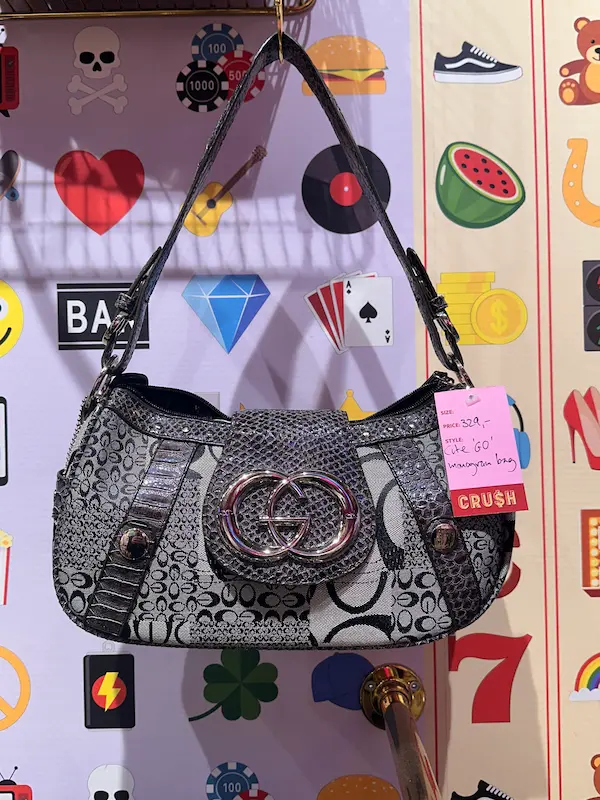
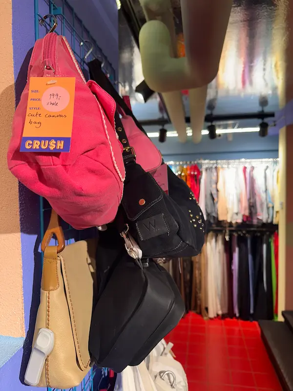
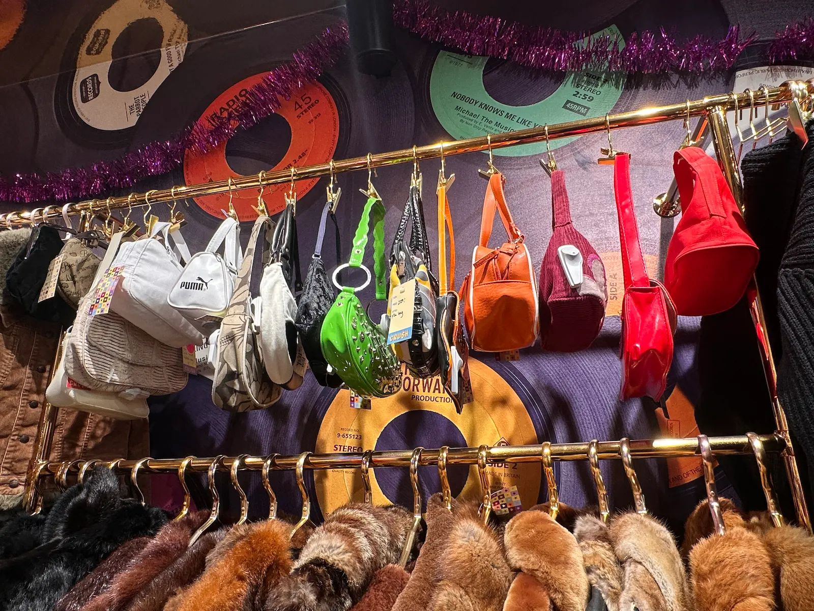
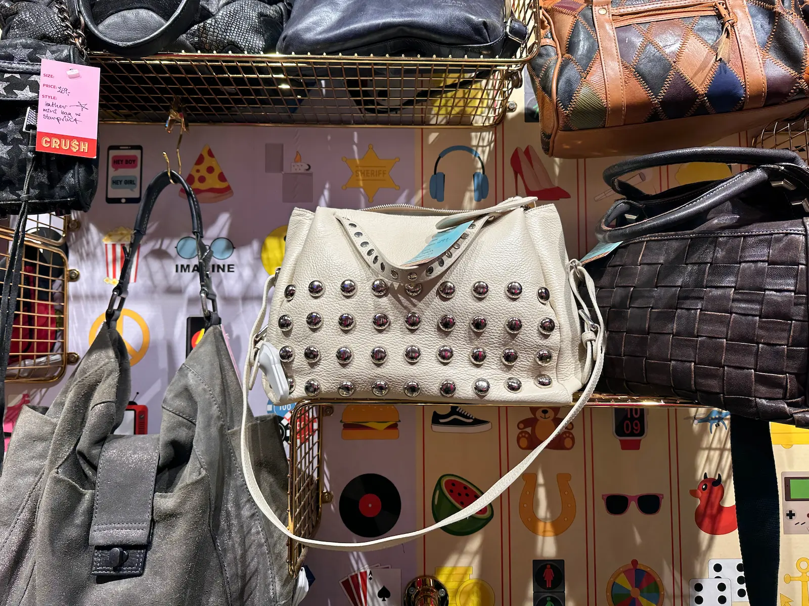
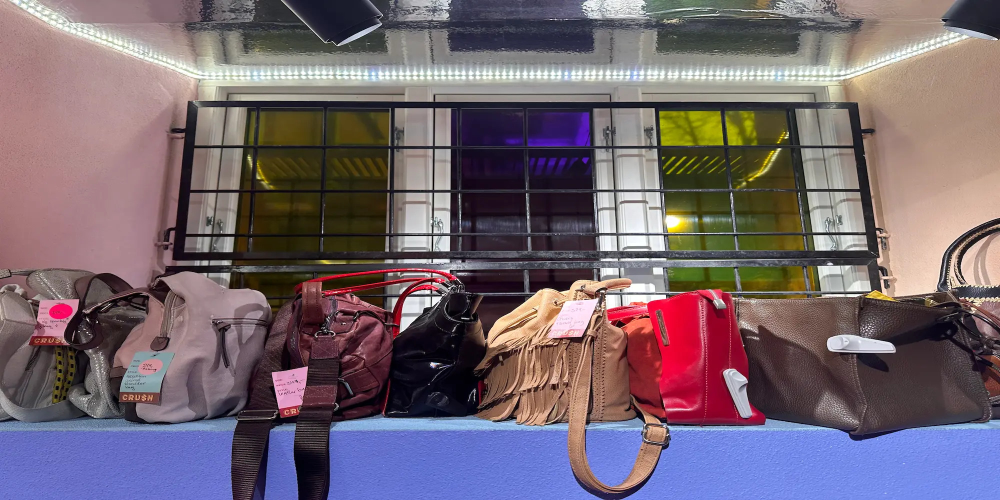
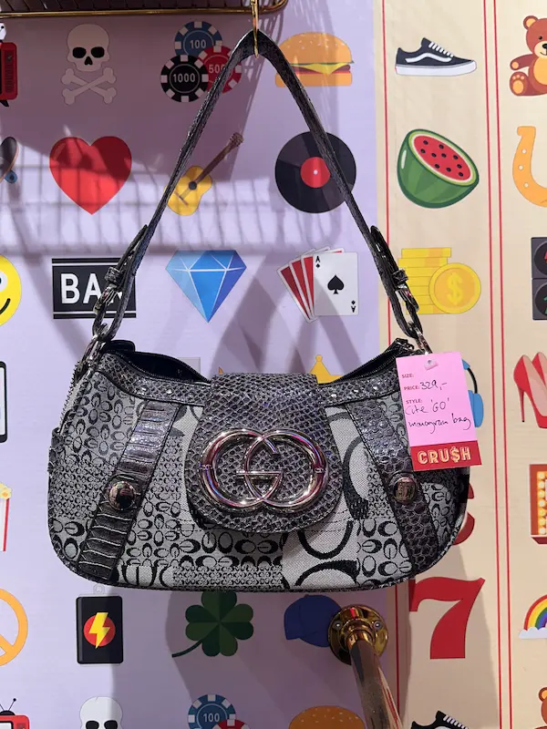
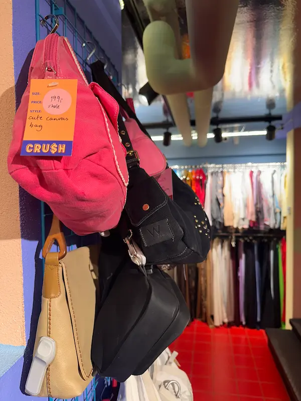
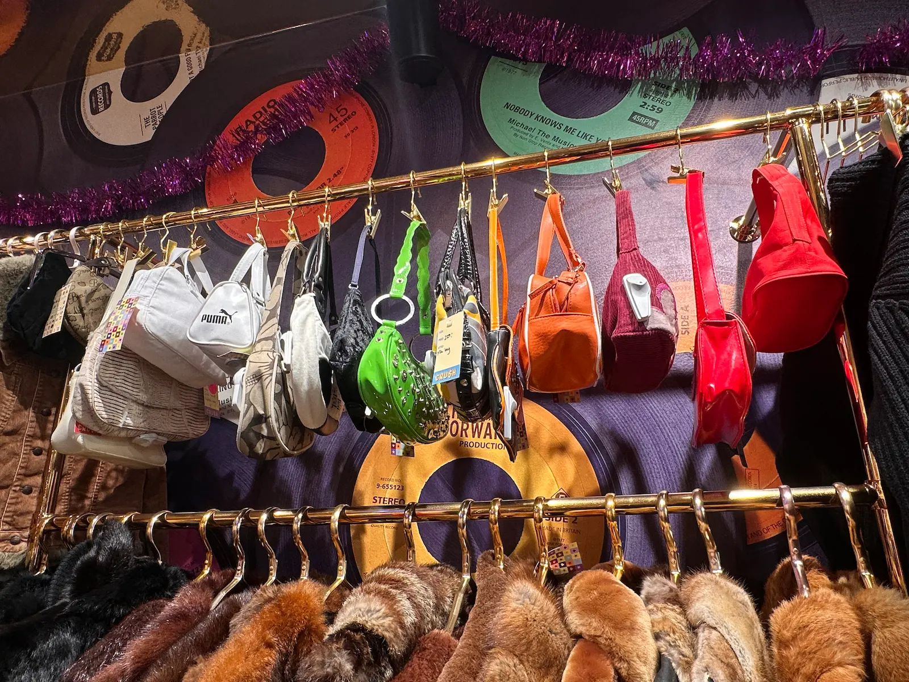
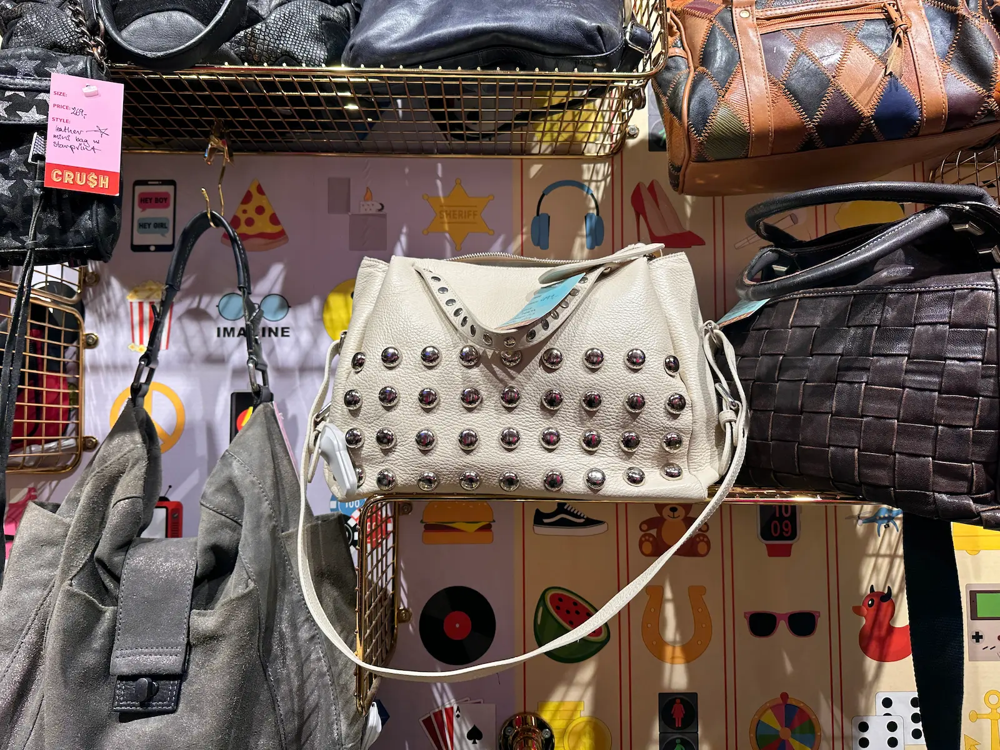
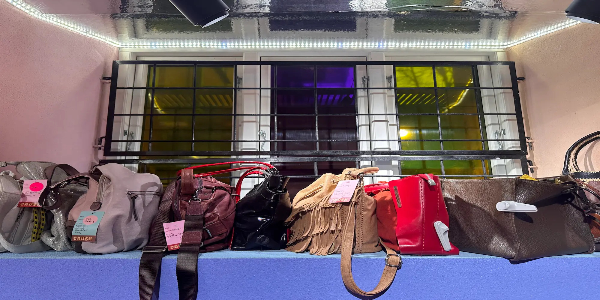

Tasker
Hos CRU$H finder du håndplukkede vintage-tasker med masser af personlighed – fra klassiske lædertasker til farverige statement bags. Her ser du et udsnit af butikkens udvalg.
 








